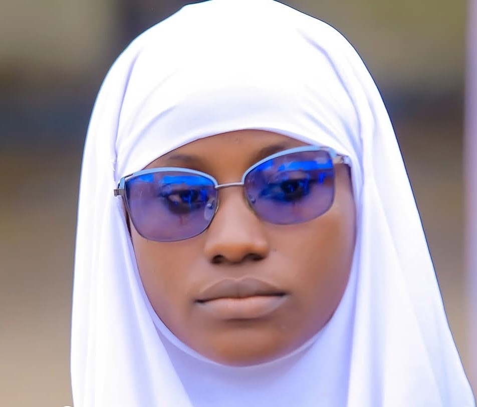
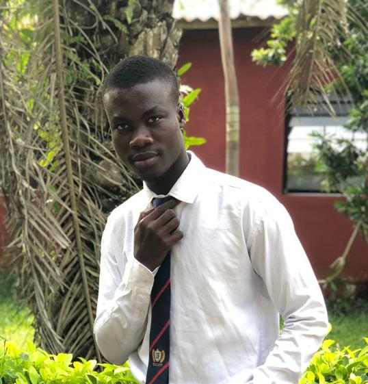
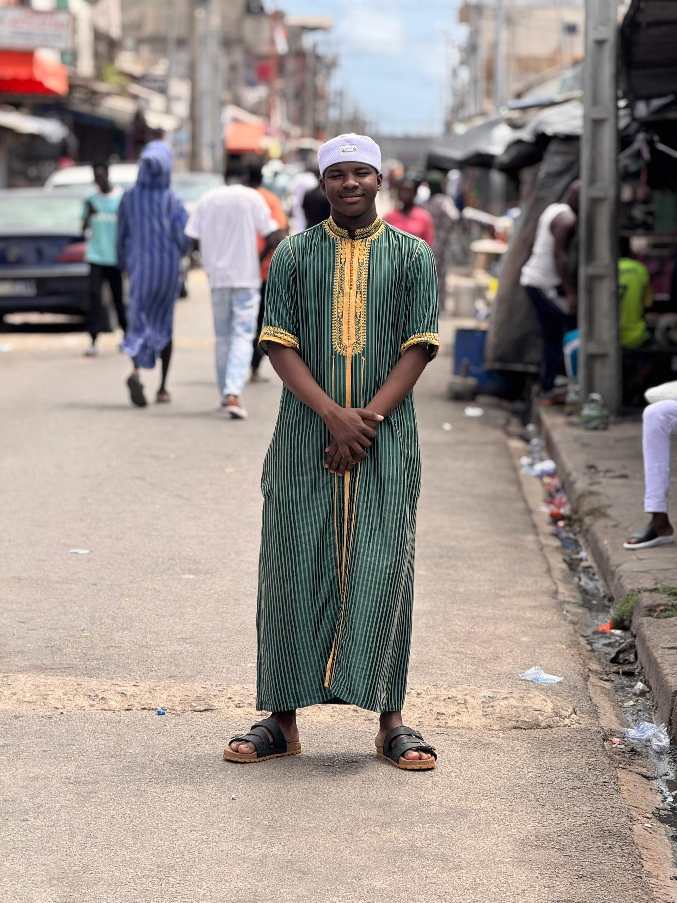

Date
Dimanche 23 août 2026
Date officielle confirmée pour la finale QI26.
Support court pour présenter les finalistes, les informations confirmées, les supports de communication et les décisions à valider en réunion.
Accès rapide
Informations confirmées
Date
Date officielle confirmée pour la finale QI26.
Lieu
Lieu indiqué sur les supports d’organisation de la finale.
Organisateur
Association des Serviteurs d’Allah Azawajal.
Présentation orale
Une trame simple pour conduire la réunion sans se perdre dans les détails.
Finalistes
Liste courte, uniforme et exploitable rapidement pendant une réunion de préparation.

Koumassi · 20 ans · Bac

Port-Bouët · 21 ans · Terminale D

Yopougon · 26 ans · Terminale

Koumassi · 24 ans · Génie Civil

Yopougon · 23 ans · Licence 2 de Droit

Adjamé · 22 ans · Terminale D

Adjamé · 20 ans · Licence 1

Cocody · 25 ans · L3 Géographie

Treichville · 19 ans · Terminale

Plateau · 22 ans · Licence 2
Répartition
| Commune | Finalistes | Nombre |
|---|---|---|
| Adjamé | Kouyaté Fatoumata Ramadan, Diabaté Oumar | 2 |
| Koumassi | Oyewo Olamide Fatiatou, Kokora Mohamed Ouattara | 2 |
| Yopougon | Sidibé Mohamed, Dosso Mohamed Lamine | 2 |
| Cocody | Sib Abdoulaye | 1 |
| Plateau | Sayore Nassiratou | 1 |
| Port-Bouët | Kouyaté Amara | 1 |
| Treichville | Sylla Aboubakar Sidik Abdoul Aziz | 1 |
Préparation
Liste de contrôle pour suivre les points concrets d’une réunion à l’autre.
Suivi réunion
Zone de travail pour noter les arbitrages, responsables et délais pendant la réunion.
| Décision | Responsable | Délai |
|---|---|---|
| Ordre de publication des affiches | Communication | À fixer |
| Validation finale des fiches candidates | Coordination QI26 | À fixer |
| Impression des supports réunion/finalistes | Logistique | À fixer |
| Répartition des relais WhatsApp | Responsables communes | À fixer |
| Préparation des certificats et lots | Commission organisation | À fixer |
Vigilance
Publier les rappels assez tôt pour mobiliser les familles et les communes.
Prévoir une date limite pour imprimer fiches, certificats et documents utiles.
Confirmer la présence des candidats et garder un contact fiable par finaliste.
Garder QR, fiches, médias et feuille de présence disponibles hors ligne.
Affiches
Les affiches ci-dessous sont prêtes pour présentation, réunion ou partage après validation finale de l’équipe communication.
Textes courts pour mobiliser les familles, communes et sympathisants sans réécriture pendant la réunion.